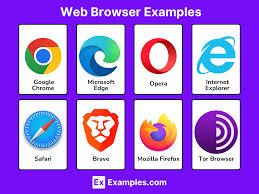

<!DOCTYPE html>
<html lang="en"></html>
<head>
    <meta charset="UTF-8">
    <meta name="viewport" content="width=device-width, initial-scale=1.0">
    <title>Web Browser</title>

</head>
<h2>Click the links below to explore other pages</h2>
<div style="display: flex; gap: 25px;">
    <a href = "www.html">World Wide Web</a> |
    
    <a href = "web1.html">Web 1.0</a> |
    
    <a href = "web2.html">Web 2.0</a> |
    
    <a href = "web3.html">Web 3.0</a> |
    
    <a href = "web4.html">Web 4.0</a> |
    
    <a href = "url.html">Uniform Resource Locator</a> |
    <br>
    
        
    <a href = "webserver.html">Web Server</a> |

    <a href = tcp.html>Transmission Control Protocol</a> |
    
    <a href = "http.html">Hypertext Transfer Protocol</a> |
    
    
    <a href =  "ftp.html">File Transfer Protocol</a> |
    
    <a href = "extranet.html">Extranet</a> |
    
    <a href = "intranet.html">Intranet</a> |
    
    <a href = "markup.html">HyperText Markup Language (HTML)</a> |
    
    <a href = "domain.html">Domain Name System</a> |
    
    <a href = "multitier.html">Multitier Architecture</a> |
    <br>
 |
        </div>
        <a href = "index.html">Back to Homepage</a>
<h1>Web Browser</h1>
<body>

<hr>
<p>A web browser is a software application that allows users to access and view content on the World Wide Web. It serves as an interface between the user and the web, enabling users to navigate through websites, access information, and interact with online content.</p>
<p>Web browsers work by sending requests to web servers for specific web pages or resources. When a user enters a URL (Uniform Resource Locator) into the browser's address bar, the browser sends a request to the corresponding web server to retrieve the requested content. The web server processes the request and sends back the appropriate response, which is then rendered by the browser for the user to view.</p>
<p>Web browsers also support various features such as bookmarking, tabbed browsing, and extensions that enhance the browsing experience. They are essential tools for accessing and navigating the vast amount of information available on the internet.</p>
</body>
</html>